Cytoscape now includes a new Quick Find feature, which enables you to quickly find nodes and edges.
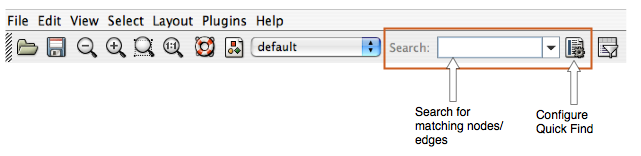
Using Quick Find is very simple. Here is how it works:
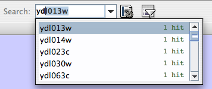
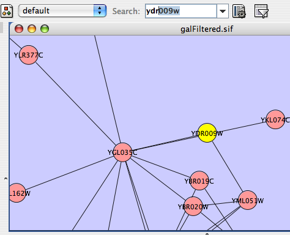
Quick Find works by creating an internal index of all nodes within the network. By default, Cytoscape indexes all nodes by the node identifier. However, you can configure Quick Find to index nodes or edges, and you can choose to index on any attribute.
For example, if you load up a BioPAX file (sampleData/Apoptosis_BioPAX.xml), your network will be automatically annotated with numerous attributes. To index the network based on, e.g. cellular location, click the Quick Find configuration button, and select "biopax_cellular" location from the drop-down menu.
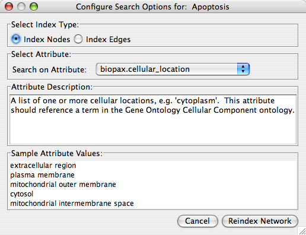
You can then quickly find all proteins located in the "plasma membrane" by just typing "p".
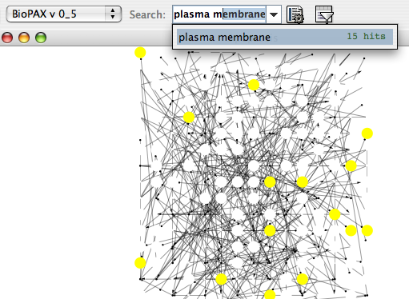
Tip: If you don't know what to search for, just leave the search box empty, and click on the down arrow directly next to the search box. Cytoscape will provide you with an initial list of matches. In the case below, we get a list of all distinct cellular locations in the network.
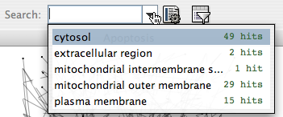
If you choose to index on a numerical attribute, the Cytoscape search box changes to a dynamic slider for quick filtering.
For example:
Import a network: sampleData/galFiltered.sif. File → Import → Network.
Import an expression data file: sampleData/galExpData.pvals. File → Import → Attribute / Expression Matrix
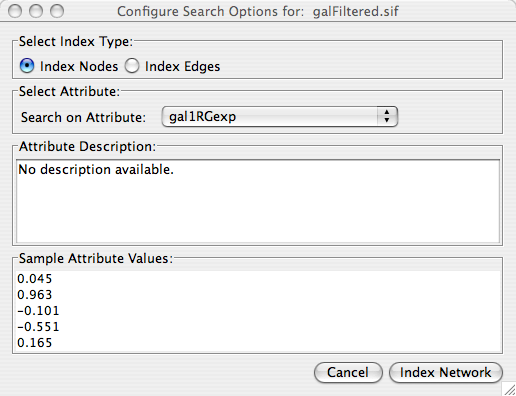
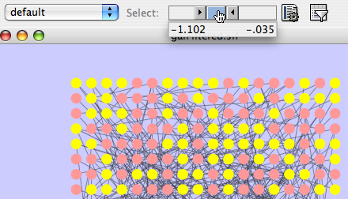
Filters allow for a wide variety of filtering on node and edge attributes loaded onto Cytoscape networks. Filters are poorly named because what they really do is select nodes or edges based on properties you specifiy. For example, you can select all the nodes whose name contains a specific pattern. Several types of filters are available. Basic filters allow the selection of multiple nodes or edges according to attribute data:
String filters allow selection of nodes or edges with attributes matching specified patterns. These patterns may include the wildcards * and ?.
Numerical filters allow selection of nodes or edges according to numerical attributes and the mathematical operators >, =, and <.
Topology filters allow selection of nodes with neighbors that match some pre-existing filter.
Compound filters allow selection based on the application of pre-existing filters:
Boolean filters allow the combination of multiple filters using the AND, OR and XOR operators. Example filters are shipped with the plugin to get started.
By default, you should see a filter icon on the toolbar:
If you press the filter icon, you will see a filters dialog which initially looks like the following:
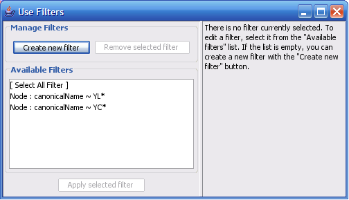
If the first filter is selected, then the dialog looks as shown:
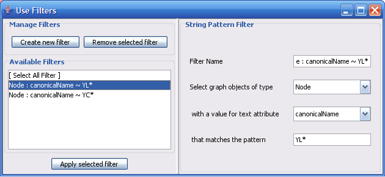
The right panel: An existing or newly created filter can be edited in this area. Each filter type has its own user interface for editing.
The low left panel: All available filters are shown in this list. Initially, this list will contain sample filters, but as you create more, they will be added here.
The up left panel: Pressing “Create new filter” adds a filter to the “Available Filters” box, and “Remove selected filter” deletes the currently selected filter.
The “Create new filter” button brings up the Filter creation dialog box, shown below.
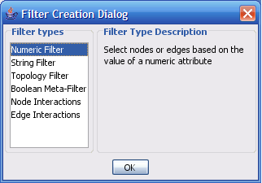
The important thing to realize when creating a filter is that the filter does not do anything by itself. Once created, the filter must be run.
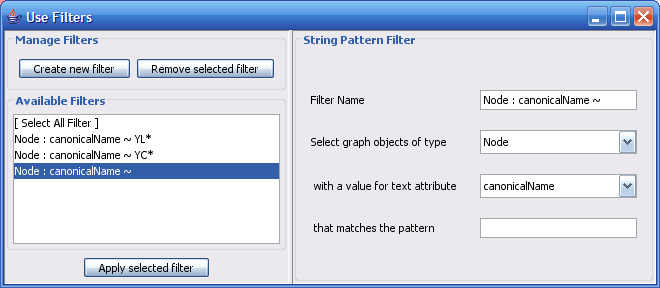
The String Filter allows you to filter nodes or edges by a given string node or edge attribute. Attributes that are loaded on the network are available for filtering against. Search terms are entered in the text box at the bottom. For example to match any Node whose canonicalName starts with “YDL” you would select “Node”, “canonicalName” and type “YDL*”. The * is important as it matches any number of characters after YDL. If you want to be more specific and only select nodes whose canonicalName starts with YDL00 followed by any other two characters, you would type “YDL00??”. The “?” denotes any single character, while the “*” represents zero or more characters. Full regular expression searching is supported, although is not covered here. Once the filter is defined, it will be assigned a default descriptive name.
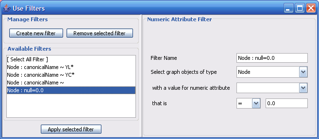
The Numerical Filter also allows you to filter nodes or edges, and presents you with a list of available attributes. This filter matches greater-than, less-than, or equal-to a number you type in the search box.
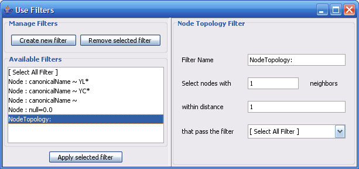
The node topology filter allows you to select nodes with at least n neighbors of distance m or less that pass some other selected filter. For instance, to select all the nodes adjacent to a node with the canonical name matching ‘YD*’, you would “select nodes with 1 neighbors”, “within distance 1”, “that pass the filter Node: canonicalName ~ YD*”.
The node topology filter depends on the existence of other filters. By default the [No Filter] is selected for this purpose. The [No Filter] doesn't filter anything, rather it selects all nodes.
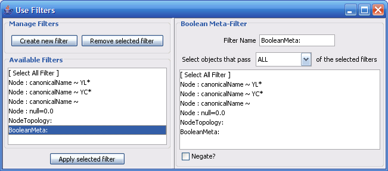
The Boolean Meta-Filter allows you to define a new filter that is a logical combination of existing filters. Available filters are displayed. By selecting one or more filters, you can then choose whether Nodes or Edges pass “ALL” (AND), “AT LEAST ONE” (OR), or “ONLY ONE” (XOR) of the selected filters. Once created Boolean filters can then themselves be combined using the Boolean filter to create arbitrarily complex logical combinations of filters. Note that unlike the String and Numerical Filters, Boolean Filters will need to be assigned a name manually.
Filters are currently saved automatically in the filters.props file found in the .cytoscape directory, found in each user's home directory. Once created, filters are saved for future sessions, as long as you exit Cytoscape normally via the exit command in the File menu (i.e. not via ctrl-c on Linux).
Any available filter can be run by pressing the ‘Apply selected filter’ button. When a filter is applied and multiple nodes or edges are selected, all of the normal selection-related operations may be performed, such as Delete Selected Node/Edges, Copy To New Network, and Invert Selection.
The Select → Nodes and Select → Edges menus provide several mechanisms for selecting nodes and edges. Most options are fairly straightforward, however some need extra explanation.
Select → Nodes → By Name... selects nodes by the node identifier (ID). This is the value seen in the left-most column of the attribute browser. This does not change if the node label changes!
Select → Nodes → From File... selects nodes based on node identifiers found in a specified file. The file format is simply one node id per line:
Node1 Node2 Node3 ...